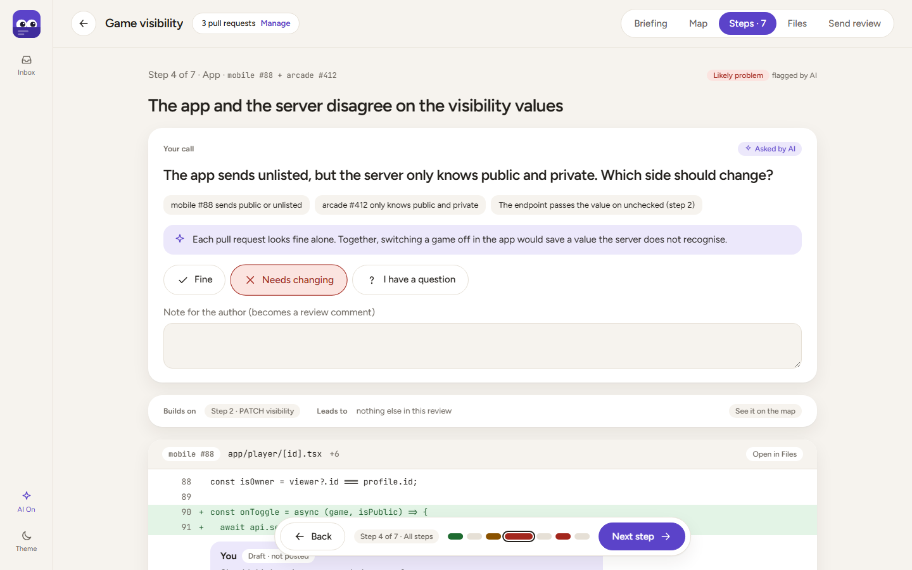
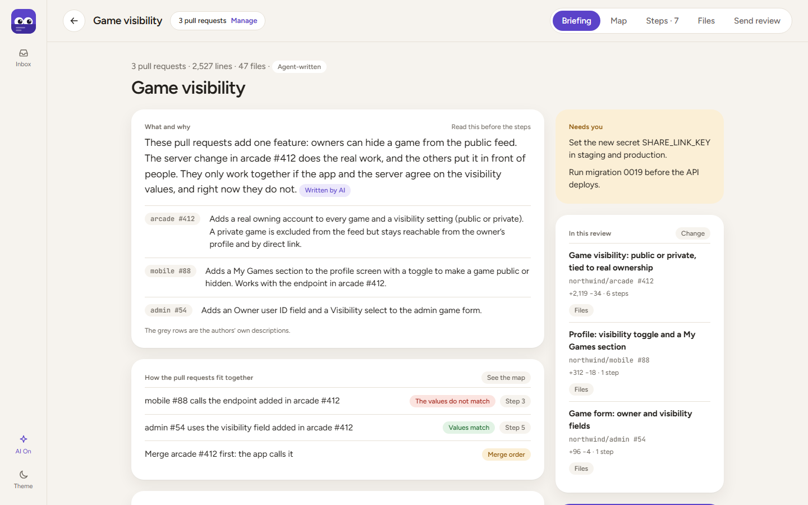
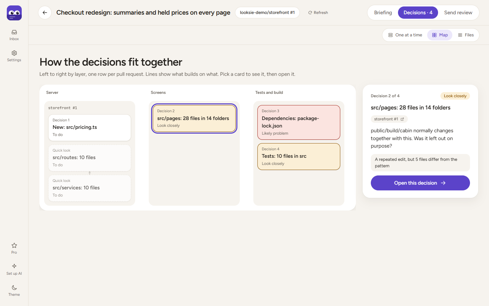

Looksie walks you through a pull request one decision at a time: a briefing first, then the parts that need your judgement, then your review, posted as you.
Free on public repositories, for good. Works with GitHub today. Preview builds are not signed yet: how to open them.

Coding agents write a lot, quickly, with a confident write-up on top. The real question gets buried: what am I actually agreeing to? Reading the diff top to bottom is slow, and another bot leaving comments just gives you more to read.
Looksie is not a bot. It is your own tool for doing the review, and it only speaks when you press Submit.
What the change is for, in the author's words. Each claim they make is checked against the code and the CI results, and anything that needs you (a secret, a manual step) is pulled out.
The change is split into steps and read in order: data, server, screens, tests. Looksie picks the handful that need your judgement and says why. The rest is listed as quick looks, to glance at or wave through.
Answer Fine, Needs changing or Question as you go, and comment on any line. At the end you see exactly what will be sent, then post one review. Nothing leaves until you press Submit.

A 2,000-line pull request comes out as about nine decisions. A sweep across a thousand files that all got the same edit is one quick look, plus the few that did not follow the pattern.
When pull requests point at the same issue or at each other, Looksie suggests reviewing them together, shows how they connect, and says which to merge first. You can also group them yourself.
Everything above is rules and facts. If you already use an AI coding tool, Looksie can ask it for a plain-English summary and a sharper question per decision. Every answer has to quote a real line from the change, or it is thrown away.
A map of how the steps depend on each other, and every changed file with a link straight to the decision that asks about it.

One simple line: if the repository is public, Looksie is free. Private repositories are part of Pro. Every feature and every connection is the same on both.
$0
For open source, and for trying it properly.
$10 a month, or $96 a year
For the code you are paid to review.
Coming to Pro*
First 100 Approvers: 40% off the yearly plan, for life.
* Planned, and subject to change. You pay for what Pro does today.
Looksie runs on your computer. There are no Looksie servers and no accounts, and it collects nothing about you.
Yes. Looksie decides where to look first. It never says the code is right, and never approves for you.
On a big pull request, the riskiest parts come first as decisions. Everything else is still there as quick looks, each saying why. Glance over them; don't skip them.
It can miss a bug no rule looks for, or anything outside the change, like real data. AI answers can be wrong too, so each must quote a real line and is marked as AI.
Packages dropped from the lockfile that something still needs. Workflows that can't start. New secrets or settings someone has to set. Migrations that change stored data. Tests switched off. A page changed but its built copy not. The odd file out in a big repeated edit. Claims in the description that the code or CI disagrees with. Then it weighs what's left: databases, sign-in, money, code that already ran. It doesn't run your code.
Nope. Looksie never comments by itself. It only posts your review, when you press Submit.
No. Everything works without AI. If you already have an AI coding tool, Looksie can use it for a summary and sharper questions.
GitHub, including company GitHub servers. Azure DevOps, GitLab and local folders are next, the same on Free and Pro.
Expected for now: preview builds aren't signed yet. Windows: "More info", then "Run anyway". Mac: open it once, then System Settings, Privacy & Security, "Open Anyway". Step by step.
Your licence is a key, not an install. Paste it again and you're back. It works on three of your own devices at once.
Yes. Within 14 days, no questions.